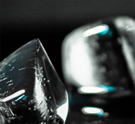
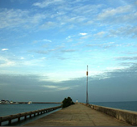

徒手攀岩（rock climing with hands）：利用岩石上的裂缝、洞穴、突起等天然把手攀登陡峭岩壁的运动。攀岩是一项锻炼综合素质的运动，不仅可以获得惊人的勇气、过人的力量、极好的柔韧性，更可以提高耐力和判断力，使人在激烈竞争、纷繁紊乱的都市生活中应付自如。在岩壁上攀爬时，生活简单得只剩下自己。
徒手攀岩就是不加辅助攀岩工具和保护措施的攀岩运动，因而具有极大的危险性，名列世界十大危险运动之列。但是，徒手攀岩正以其特有的魅力，突出的个性感染着人们，参与攀岩，会让人在与悬崖峭壁的抗衡中学会坚强，在与大山的拥抱中感受宽容，在征服攀登路线后享受成功与胜利的喜悦。
在欧美、前苏联及亚洲的日本、韩国，攀岩运动已相当流行，当今世界攀岩水平数欧美特别是法国与美国最高，法国相对在人工岩壁上占优，美国在自然岩壁称强。在亚洲，日本、韩国水平较高，他们有些选手已达到世界水平。中国大陆、香港及台湾的水平大体相当，同属亚洲中流水平。Read More...

攀岩运动起源于18世纪的欧洲，1970年成为一项独立的运动项目。徒手攀岩是指不依赖任何外在的辅助力量，只靠攀登者的自身力量完成攀登过程。
在欧美、前苏联及亚洲的日本、韩国，徒手攀岩运动已相当流行，当今世界攀岩水平数欧美特别是法国与美国最高，法国相对在人工岩壁上占优，美国在自然岩壁称强。在亚洲，日本、韩国水平较高，他们有些选手已达到世界水平。中国大陆、香港及台湾的水平大体相当，同属亚洲中流水平。

徒手攀岩要求人们在各种高度及角度的岩壁上，连续完成转身、引体向上、腾挪甚至跳跃等惊险动作，集健身、娱乐、竞技于一身，是一项刺激而不失优美的极限运动，被全球的攀岩迷们称为“峭壁上的芭蕾”。
虽然，近年来攀岩已渐渐成为了一种大众化的户外极限运动，越来越多的人从攀岩运动中体验到了独特的乐趣，但是徒手攀岩对人的体能、胆量、身体协调性和柔韧性的要求极高，对于那些没有经过系统的专业训练的初学者来说无疑是危险重重。